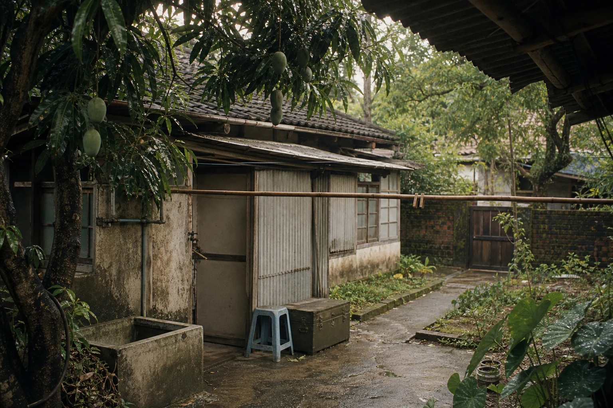
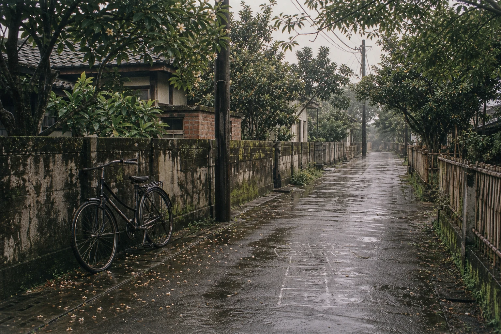
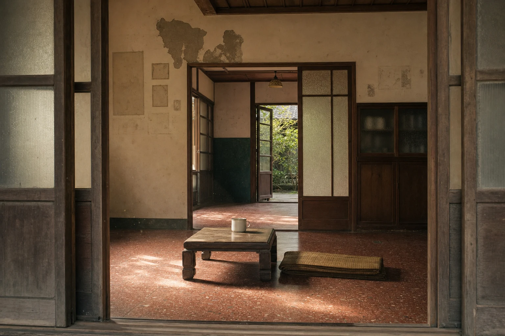
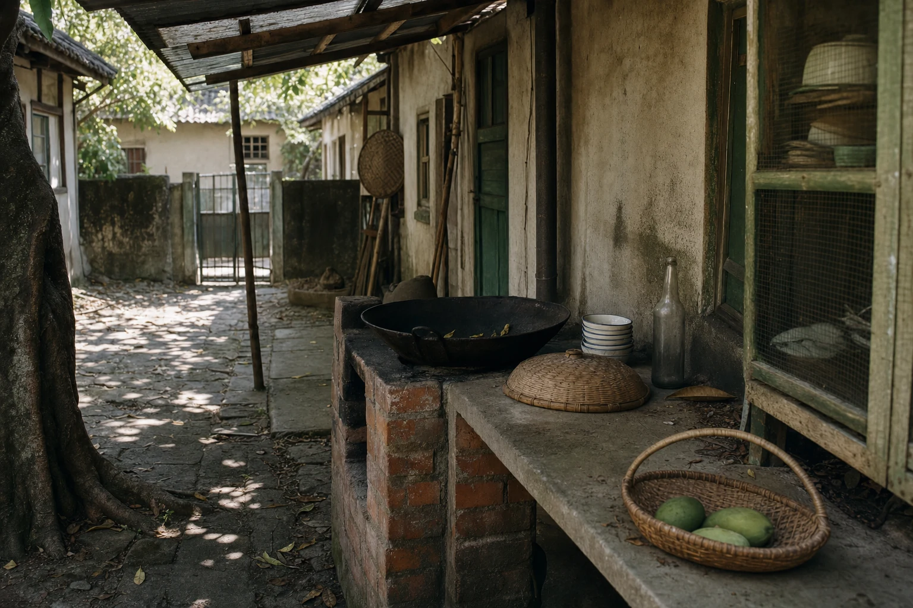
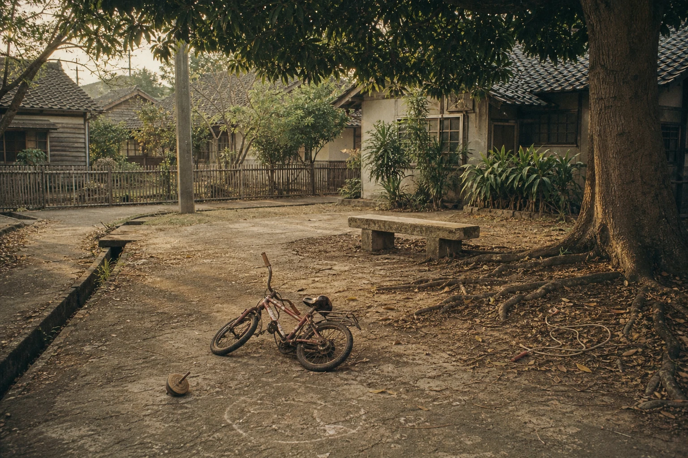
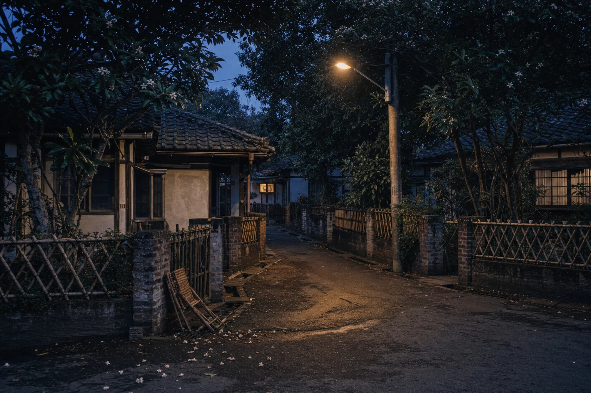
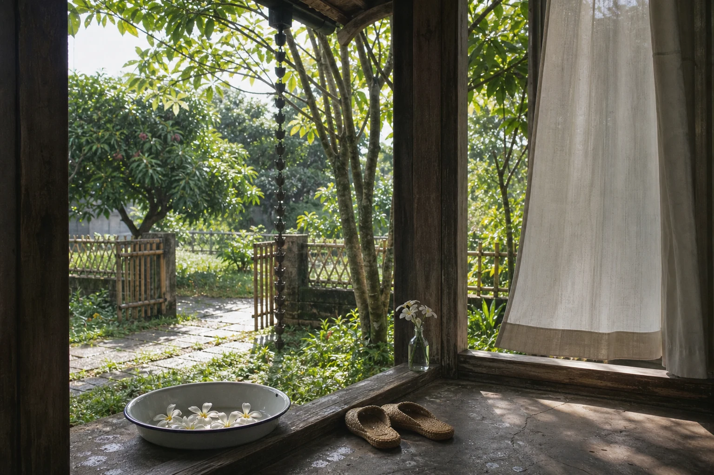
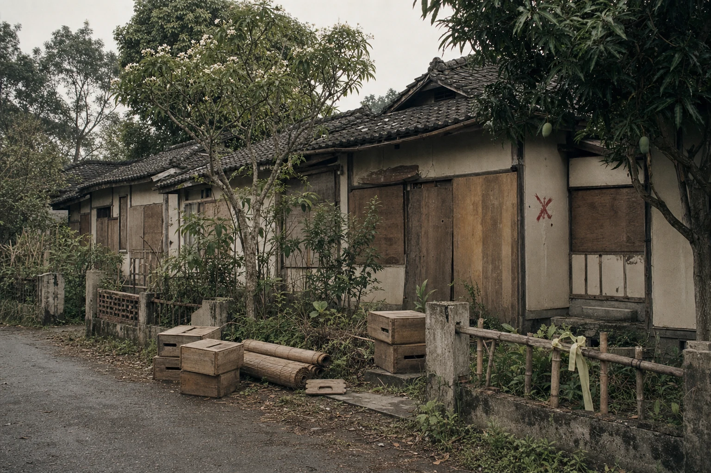
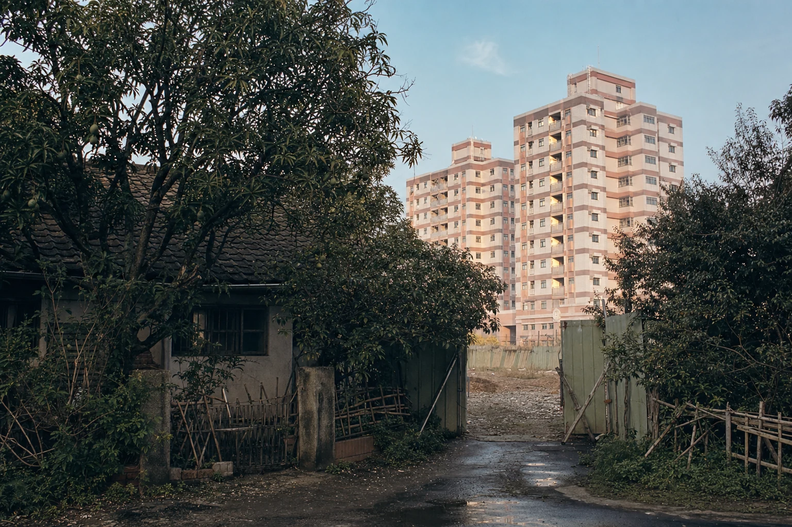

最近，我總是想起白川町。
想起它的時候，最先回來的不是房子的模樣，也不是哪一條路通往哪一戶人家，而是一種很淡、很熟悉的氣味。玉蘭花在悶熱的午後開著，白色花瓣落在前庭的水泥地上；後院的芒果樹被風吹動，青綠色的果實藏在濃密的葉子裡。雨剛停，老屋的木頭、泥土與青苔一起散發出潮濕的味道。那大概就是我記憶裡，白川町最接近永遠的樣子。
那些日式老平房並不整齊。黑灰色的瓦片有些鬆動，牆面被歲月磨得斑駁，木窗經過一次又一次修補，後來又多了鐵窗、紗網和簡單搭建的鐵皮屋頂。有人在門前圍起竹籬笆，有人沿著牆角種花，也有人把撿來的木板釘成矮凳。現在回頭看，那些房子或許稱不上漂亮，卻有一種新建住宅很難擁有的溫度：每一道痕跡，都知道自己為什麼留在那裡。


前庭不是為了觀賞而存在的。
大人坐在藤椅上剝菜、聊天，老人把洗好的衣服晾在竹竿上，孩子放學後把書包往屋裡一丟，便沿著巷子跑去找人。誰家的玉蘭花開了，鄰居經過時順手撿起一朵，放進口袋，或擱在窗邊的小玻璃瓶裡。花香很輕，卻能跟著人走過整條街。那時候的人未必把它稱作生活美學，只覺得日子本來就該這樣過。
後院的芒果樹則像另一位沉默的家人。
夏天還沒真正到來，樹上已經結滿青芒果。孩子抬頭計算哪一顆最大，大人提醒別爬得太高。颱風過後，滿地都是被風吹落的果子，撿回家削皮、沾糖或醃起來，便成了幾戶人家共同分享的味道。樹下有水龍頭、水泥洗衣槽、舊臉盆，也有兩戶共用過的廚房。傍晚炊煙一起升起，辣椒、醬油、蔥花和煤煙混在潮濕的空氣裡，誰家今晚煮了什麼，往往不用問就知道。


眷村的街道很窄，卻從來不覺得擁擠。
腳踏車靠在牆邊，孩子用粉筆在地上畫格子。有人站在門口喊一聲，聲音可以穿過好幾個院子。鄰居知道誰家的父親還沒回來，也知道哪個孩子又忘了帶鑰匙。那是一個很難把自己完全關起來的地方，門與門之間太近，人的日子也靠得很近。偶爾會嫌彼此吵，嫌別人管得太多，可真正需要幫忙時，最先推門進來的，仍是那些平日愛念你幾句的人。
八十年代的白川町，沒有被刻意保存的懷舊色調。生活是真實而粗糙的。夏天炎熱，雨季漏水，木門會卡住，屋瓦需要修補，巷子裡的排水溝有時飄出難聞的氣味。房間不大，孩子長大後顯得更加狹窄。人們在有限的空間裡加蓋、修補，把一個暫時落腳的地方，慢慢住成一輩子的家。


後來，搬遷的消息真的來了。
家具一件件被抬出去，牆上的照片被取下，只留下深淺不一的方形印子。竹簾捲起來，碗盤裝進紙箱，舊軍綠色鐵箱再一次被搬動。有人說，搬進大樓很好，有電梯、有完整的廚房和浴室，下雨不用再拿臉盆接水；也有人站在院子裡看了很久，不知道那棵陪伴幾十年的芒果樹，究竟該怎麼一起帶走。
人去樓空之後，白川町忽然變得很安靜。
窗戶被木板封起，院門半開著，藤椅還留在屋簷下。雨落進無人清掃的院子，玉蘭花仍然照常開放，芒果也仍然在夏天成熟。植物並不知道人們已經告別，它們沿著原來的季節生長，像是在替離開的人繼續守著門。偶爾有風吹過空巷，樹葉互相摩擦，那聲音很像從前，只是再也沒有人從屋裡應聲。


再後來，低矮的屋瓦消失了。
原來可以一眼望到天空的地方，升起一棟又一棟新的大樓。住在不同眷村的人們搬進同一座新社區，地址變了，樓層變了，回家的方式也變了。從前推開院門就能遇見鄰居，後來要先經過大門、搭上電梯，再走進一條安靜的走廊。新房子更安全、更方便，也照顧了年老住戶真正的需要；只是那些前庭、後院與樹蔭下自然發生的相遇，從此很難完整地搬進樓房裡。
我們懷念白川町，並不是因為舊房子比新房子更好，也不是希望所有人永遠住在漏雨、狹小的平房裡。真正捨不得的，是一種生活的尺度。
那時候，天空離屋頂很近，土地離人的腳也很近。季節不是手機上的溫度，而是玉蘭花什麼時候開、芒果什麼時候落下。孩子的成長刻在門框上，父母的老去藏在藤椅磨亮的扶手裡。房子不是一個能夠單獨計算坪數的空間，它和樹、巷子、鄰居以及一日三餐連在一起。拆除一棟房子很快，拆除一段共同生活過的時間，卻需要很久。
直到今天，有些人可能已經記不清當年的門牌，卻仍記得從哪一個轉角回家；忘了鄰居完整的姓名，卻記得他說話的腔調；記不得院牆原來是什麼顏色，卻記得夏夜坐在門口乘涼時，頭頂那片被芒果葉切成細碎形狀的月光。

城市不斷更新，新的建築總會覆蓋舊的地景。我們無法要求時間停下，也不能把每一棟房子都留在原地。但至少可以好好記住，那裡曾經有人生活過。有人在清晨穿過巷子上班，有人在廚房為家人準備晚飯，有孩子在樹下長大，也有一群離鄉很遠的人，終於在那片土地上，把暫住的地方叫成了家。
如果有一天，再經過如今的大樓，或許已經找不到原來的街道。可是當風裡忽然傳來一點玉蘭花香，記憶仍會替我們推開那扇舊木門。
門後的院子還在，芒果樹還在。
那些遠去的人，也都還在回家的路上。